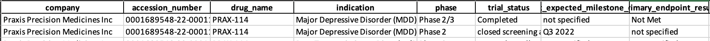

Biotech Event-Driven Alpha: End-to-End Pipeline and Backtest Design
Two-stage, event-driven framework for small/mid-cap biotech equities. Stage 1 builds a structural quality gate from SEC 10-K/10-Q filings; Stage 2 classifies press releases (PRs) into LONG/SHORT/NONE. Entries align to the next trading day’s close; exits at T+1/T+3/T+5.
Executive Summary
- Universe: PTCT, MNMD, VTGN, OVID, PRAX, CNTA, ATAI, RNA, TARS, PTGX, MDGL
- Results: 51 trades; Avg return/trade: 6.38%; Win rate: 58.82%; Payoff: 3.14; Sharpe: 4.22
Motivation & Hypothesis
Clinical and regulatory disclosures are noisy, long-form text; naive keyword screens miss context and directionality. Hypothesis: a dual-gate process—structural quality from SEC filings × near-term direction from PRs—isolates higher-probability, tradable events versus either source alone.
Data & Coverage
- SEC 10-K/10-Q (Stage 1 - quality gate): 2020-01-01 → 2022-12-31
- Press releases (Stage 2 - signal): 2023-01-01 → present (GlobeNewswire, Selenium scraping)
- Prices: yfinance daily OHLCV
Stage 1 — SEC Extraction & Valuation (Quality Gate)
Text-parsed filings are indexed in ElasticSearch; Boolean/phrase queries (e.g., “Phase 2”, “primary endpoint”, “placebo-controlled”, “Fast Track”) surface relevant sections (Items 1, 1A, 2, 7). Sections are concatenated and chunked; an LLM extracts a 14-field schema: company, drug, program, phase, primary_endpoint_result, trial_status, status_announce, adverse_events_summary, trial_design_notes, regulatory_notes, geography, clinical_benefit_summary, milestone_trigger, source. De-dup by multi-key and harmonize dates/symbols.
Program-level valuation uses explicit rules to map attributes to a 0-100 score: phase base (Preclin 0 / Ph1 5 / Ph2a 10 / Ph2b 15 / Ph2/3 20 / Ph3 25 / NDA 35 / Approved 50), outcomes (+10 met / +5 partial), status (+5 completed / +2.5 enrolling), design (+5 if DB/PC), safety (+5-10), regulatory momentum (+5-10), geography (+5 US/EU/global), imminent catalysts (+2.5-5), and an announcement multiplier (×1.2). Gate keeps High (and optionally Medium) programs; Low excluded unless overridden.
Stage 2 — Press-Release Understanding & Action
Selenium scraper with resilient waits collects PRs (ticker, title, link, date_raw, text). Dates normalized to YYYY-MM-DD. Title filter (LLM) drops non-PRs; heuristic pre-filter skips obviously neutral items (e.g., conference attendance). For each gated PR, an LLM outputs action ∈ {LONG, SHORT, NONE}, confidence ∈ [0,1], and a rationale. Decisions are persisted in a disk JSONL cache keyed by (ticker + normalized content) to ensure determinism and avoid re-spends; duplicates collapsed by symbol-date/title.
Trading Rules & Backtest Design
- Entry: next trading day close following PR date (mitigates intraday timestamp bias)
- Exit: after N ∈ {1,3,5} trading days (Close-to-Close)
- Sizing: equal-weight per qualifying PR; overlapping trades allowed; optional confidence threshold
System Architecture
Ingestion → Extraction → Valuation → Gating → PR Action → Event Alignment → Backtest → Reporting (CSV/XLSX). Checkpoints and schema guards, plus persistent caches, provide resumability and auditability.
Validation & Controls
- Deterministic cache; batch checkpoints every N PRs
- De-dup: SEC multi-key; PR by (symbol, date) and (symbol, title)
- Schema validation and strict date normalization (YYYY-MM-DD)
- Universe enforcement at merge-time
Results
- 51 trades; all LONG in this sample
- Avg return/trade 6.38%; Win rate 58.82%
- Payoff ratio 3.14; Sharpe 4.22
- Horizon: T+5 > T+3 > T+1; best +63.33%, worst −14.29%
Discussion
ElasticSearch's deterministic retrieval produced cleaner, more complete clinical fields and lower LLM noise than vector semantic search (FAISS). Larger proprietary LLMs (e.g., Gemini) significantly improved KPI extraction over smaller open models for this domain.
Conclusion & Next Steps
- Robust edge from combining structural quality and event-driven catalysts; scalable separation of slow-moving structure from fast signals
- Next: execution cost & borrow modeling, confidence-weighted sizing, broader PR sources, threading for ingestion, company-level resilience metrics
Key Features
- Dual-gate design (SEC quality + PR actions)
- Deterministic caches & schema validation
- ElasticSearch retrieval tuned for clinical text
- 51 trades; Sharpe 4.22; payoff 3.14
- Stronger T+5 horizon performance
- Scalable reporting (CSV/XLSX)